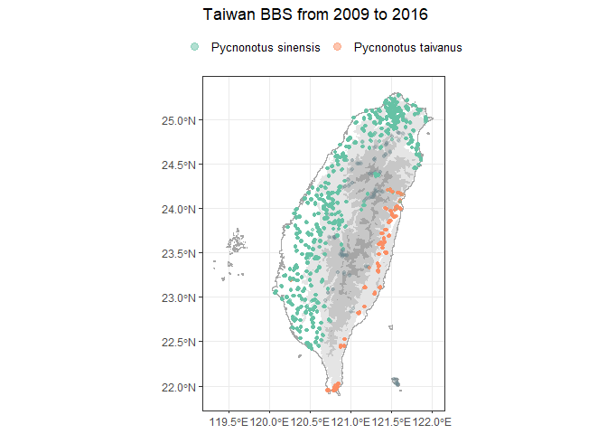

The goal of bbsTaiwan is to streamline Taiwan Breeding Birds Survey (BBS) data retrieval and analysis. It will support data retrieval from GBIF, where Taiwan BBS data are stored. ‘bbsTrim’ will also include the population trend modelling. Users can tailor species analysis, controlling data stratification, preparation, and modeling. The goal is to expand Taiwan BBS data access to the broader R-society in Taiwan.
Set up
Package installation and load: you can install the development version of bbsTaiwan from GitHub with:
How to use
If you need raw Taiwan BBS dataset on GBIF:
Taiwan BBS raw data can be accessed directly by typing the object name:
bbsTaiwan::occurrence
bbsTaiwan::event
bbsTaiwan::measurementorfacts
bbsTaiwan::extendedmeasurementorfactThe complete Taiwan BBS dataset on GBIF is following the Darwin Core Archive (DwC - A) format:
Occurrence: lists a set of times and locations at which particular species have been recorded
Event: lists includes the protocols used, the sample size, and the location for each
Measurement or Facts: includes additional information relating to the events
Extended Measurement or Fact: includes additional information relating to the taxon occurrences
We also provide a workflow to process Taiwan BBS data:
This is a basic example which shows you how to use the package:
- Look up the scientific name for species of interest
bbs_translate(c("白頭翁", "烏頭翁", "台灣噪眉"))
#> [1] "Pycnonotus sinensis" "Pycnonotus taivanus"
#> [3] "Trochalopteron morrisonianum"- Fetch the data for years and species of interest. If you need the dataset across all years and all species, leave the three arguments (
target_species,y_min, andy_max) empty.
bird_data <- bbs_fetch(target_species = c("Pycnonotus sinensis", "Pycnonotus taivanus"),
y_min = 2011,
y_max = 2016)
#> Joining with `by = join_by(locationID)`The output from bbs_fetch is a list with two elements: occurrence and site_info. occurrence is a tibble, showing all the observations for the target species within selected year range
bird_data$occurrence
#> # A tibble: 35,258 × 21
#> year eventID occurrenceID scientificName vernacularName individualCount
#> <dbl> <chr> <chr> <chr> <chr> <dbl>
#> 1 2011 TWBBS_2011_… TWBBS_2011_… Pycnonotus si… 白頭翁 5
#> 2 2011 TWBBS_2011_… TWBBS_2011_… Pycnonotus si… 白頭翁 1
#> 3 2011 TWBBS_2011_… TWBBS_2011_… Pycnonotus si… 白頭翁 1
#> 4 2011 TWBBS_2011_… TWBBS_2011_… Pycnonotus si… 白頭翁 1
#> 5 2011 TWBBS_2011_… TWBBS_2011_… Pycnonotus si… 白頭翁 2
#> 6 2011 TWBBS_2011_… TWBBS_2011_… Pycnonotus si… 白頭翁 1
#> 7 2011 TWBBS_2011_… TWBBS_2011_… Pycnonotus si… 白頭翁 2
#> 8 2011 TWBBS_2011_… TWBBS_2011_… Pycnonotus si… 白頭翁 3
#> 9 2011 TWBBS_2011_… TWBBS_2011_… Pycnonotus si… 白頭翁 1
#> 10 2011 TWBBS_2011_… TWBBS_2011_… Pycnonotus si… 白頭翁 3
#> # ℹ 35,248 more rows
#> # ℹ 15 more variables: eventDate <date>, eventTime <chr>, weather <chr>,
#> # wind <chr>, habitat <chr>, time_slot <chr>, distance <chr>, flock <chr>,
#> # site <chr>, plot <chr>, locationID <chr>, locality <chr>,
#> # decimalLatitude <dbl>, decimalLongitude <dbl>, elev <dbl>The second element site_info is a tibble including all the BBS siteswithin selected year range.
bird_data$site_info
#> # A tibble: 4,160 × 7
#> site plot locationID locality decimalLatitude decimalLongitude elev
#> <chr> <chr> <chr> <chr> <dbl> <dbl> <dbl>
#> 1 A02-01 01 A02-01_01 台北縣瑞芳 25.1 122. 109.
#> 2 A02-01 02 A02-01_02 台北縣瑞芳 25.1 122. 105.
#> 3 A02-01 03 A02-01_03 台北縣瑞芳 25.1 122. 105.
#> 4 A02-01 04 A02-01_04 台北縣瑞芳 25.1 122. 105.
#> 5 A02-01 05 A02-01_05 台北縣瑞芳 25.1 122. 105.
#> 6 A02-01 06 A02-01_06 台北縣瑞芳 25.1 122. 105.
#> 7 A02-01 07 A02-01_07 台北縣瑞芳 25.1 122. 105.
#> 8 A02-01 08 A02-01_08 台北縣瑞芳 25.1 122. 105.
#> 9 A02-01 09 A02-01_09 台北縣瑞芳 25.1 122. 154.
#> 10 A02-01 10 A02-01_10 台北縣瑞芳 25.1 122. 154.
#> # ℹ 4,150 more rows- View the distribution of all the occurrence for the target species within selected year range
bbs_plotmap(bird_data)
- Get basic summary statistics for the fetched data
bbs_stat(bird_data)
#> # A tibble: 2 × 6
#> vernacularName scientificName n_site total_count min_elev max_elev
#> <chr> <chr> <int> <dbl> <dbl> <dbl>
#> 1 烏頭翁 Pycnonotus taivanus 48 8640 22.1 1055.
#> 2 白頭翁 Pycnonotus sinensis 358 76246 1.89 2237.